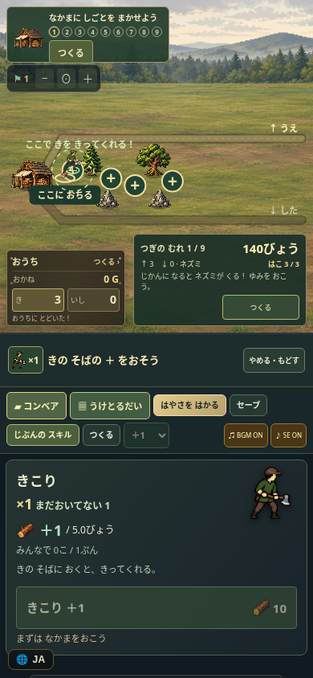
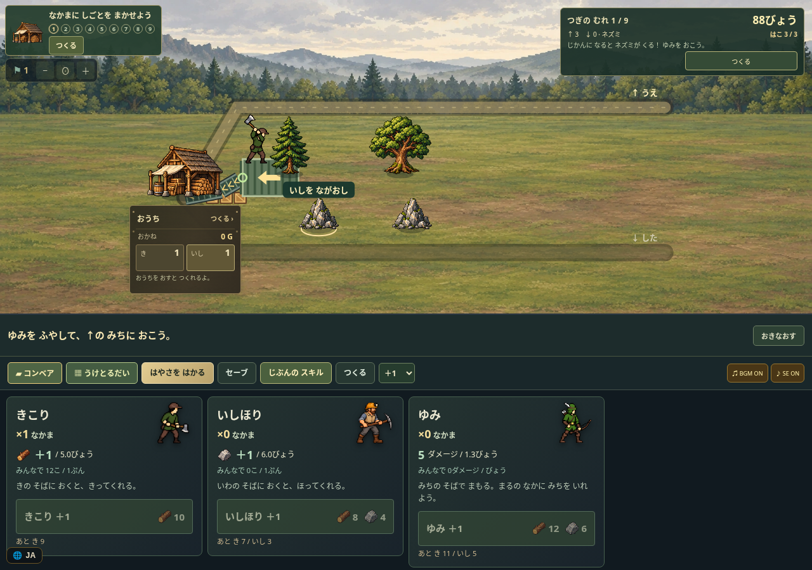
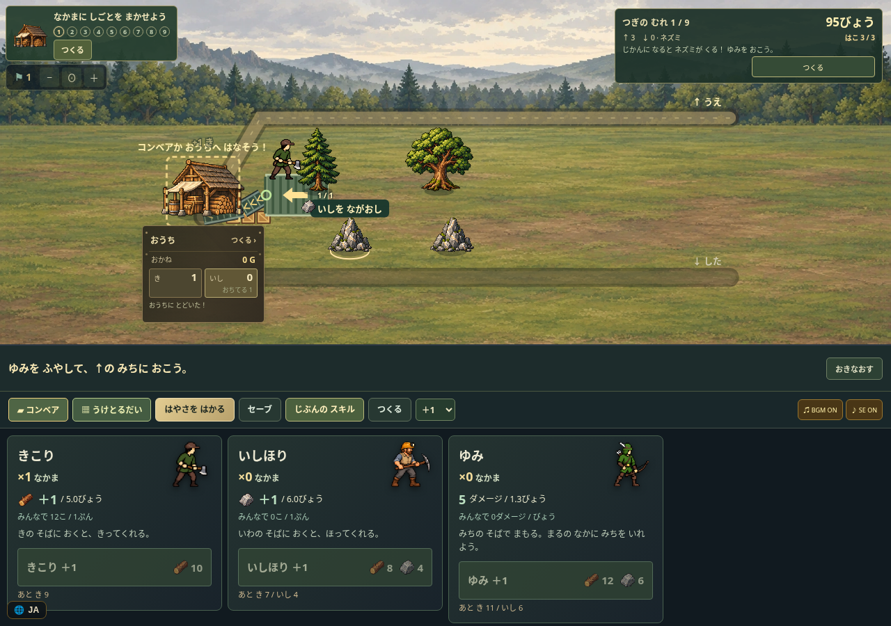

木こりを置く場所で木の落ちる位置が変わります。落下の予告を見て、コンベアや受け土台を自分で組みましょう。襲撃は残り時間がゼロになると始まります。
正規に集めた木石で受け土台を建て、同じ石をつかんで投入。土台から隣のコンベアを経て小屋へ届きます。実ブラウザの音つき。動画を保存 · 撮影条件



PC・スマホで初回の採集と木こり配置、初回の自動襲撃を確認。現行版で全9襲撃を通す再検証は未完了です。広告・解析・オンラインランキングは試遊版では停止しています。